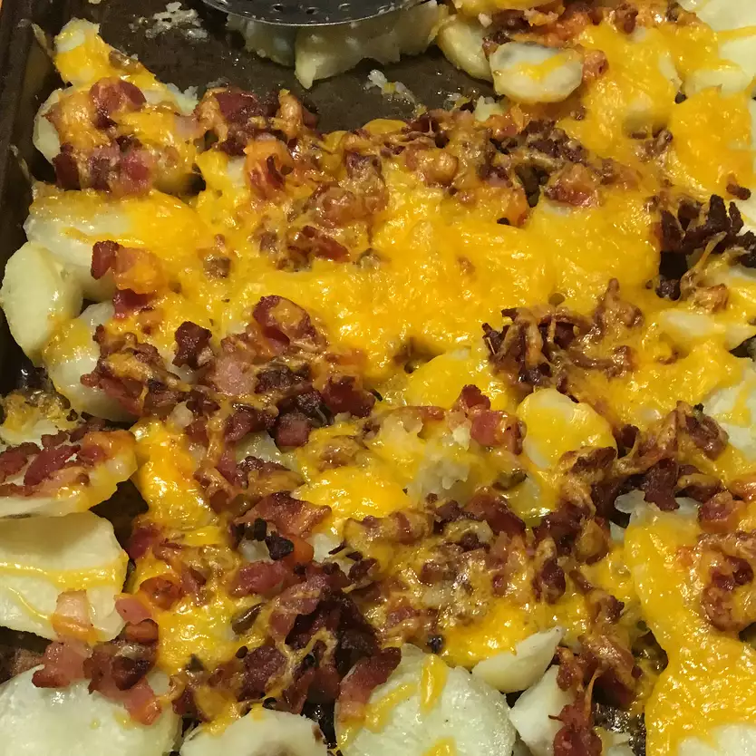

Potato Rounds

Description
Baked potato roudns are topped with bacon and cheese. Great appetizer - a
lot like potato skins but easier to make!
Ingredients
- 2 large baking potatoes
- 6 slices bacon
- 1 cup shredded cheddar cheese
Steps
-
Place the potatoes in a large pot with enough water to cover. Bring to a
boil, and cook until tender when pierced with a fork, about 20 minutes.
Drain, and cool.
-
Preheat the oven to 350 degrees F (175 degrees C). Lightly grease a
baking sheet. Cook bacon in a large skillet over medium-high heat until
crisp. Drain, cool, and crumble.
-
Slice the potatoes into 1/4 inch rounds, and arrange them in a single
layer on the baking sheet. Sprinkle a few crumbles of bacon onto each
round, then top with some shredded Cheddar cheese.
-
Bake for 15 minutes in the preheated oven, or until cheese is melted and
lightly browned.